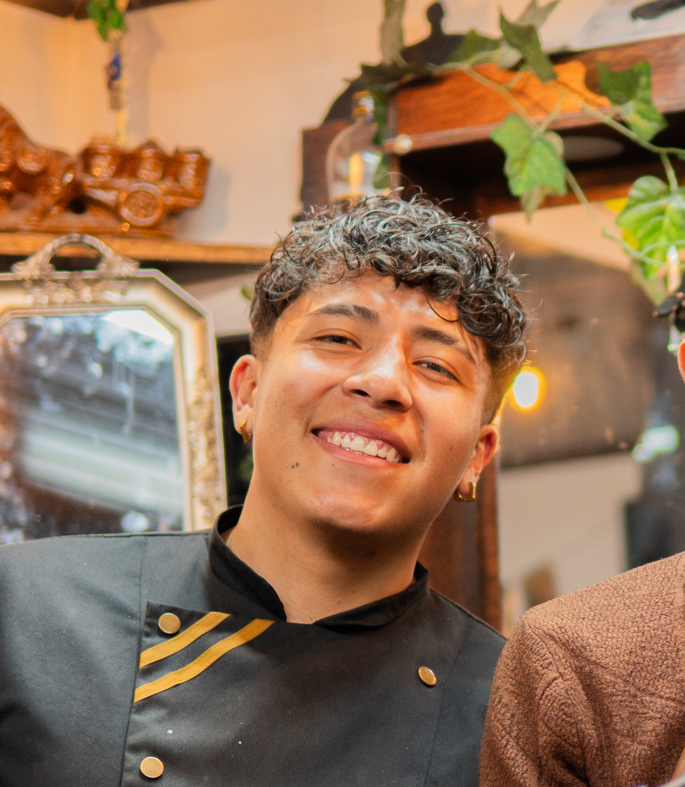

<!-- ================= HERO SELECCIÓN DE BARBERO ================= -->
<!-- Este hero aparece DESPUÉS de elegir un servicio en schedule.html -->
<section class="barber-hero">
    
    <!-- Caja principal reutilizada del hero de servicios -->
    <!-- Mantiene coherencia visual en todo BARBER1CONNECT2.0 -->
    <div class="barber-box">

        <!-- Título del hero -->
        <!-- Usa la misma clase base para mantener estilo unificado -->
        <h2 class="barber-title">
            Selecciona tu barbero
        </h2>

        <!-- Contenedor tipo slider -->
        <!-- Reutiliza el mismo sistema FIFA del hero de servicios -->
        <div class="barber-container">

            <!-- ================= TARJETA BARBERO ================= -->
            <!-- Representa un barbero disponible -->
            <div class="barber-card" data-barber="oscar">

                <!-- Imagen del barbero -->
                <!-- Se convierte en circular desde barbers.css -->
                

                <!-- Nombre del barbero -->
                <h3>⭐Oscar⭐</h3>

                <!-- Especialidad del barbero -->
                <p>PROFESIONAL</p>

            </div>

            <!-- ================= TARJETA BARBERO ================= -->
            <div class="barber-card" data-barber="brayan">

                <!-- Imagen del barbero -->
                

                <!-- Nombre del barbero -->
                <h3>⭐Brayan⭐</h3>

                <!-- Especialidad -->
                <p>PROFECIONAL</p>

            </div>

        </div> <!-- FIN CONTENEDOR BARBEROS -->

    </div> <!-- FIN HERO BOX -->

</section>
<!-- ================= FIN HERO BARBEROS ================= -->
